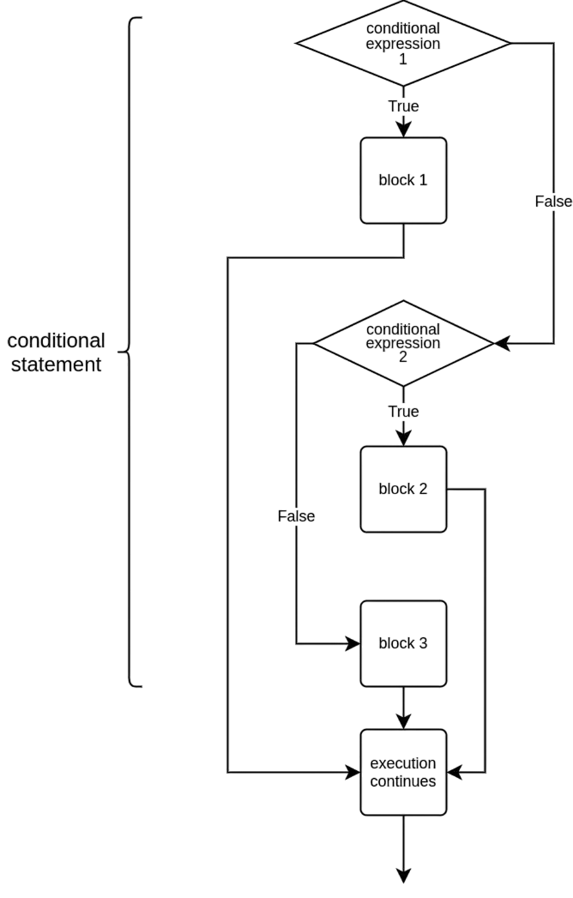

Més condicionals
Objectius d'aprenentatge
- Aprendre a crear múltiples branques dins d'una sentència condicional.
- Entendre la funció de les instruccions
if,elifielsedins d'una condició. - Utilitzar l'operador
%en expressions booleanes.
Vegem un programa que demana a l'usuari que introdueixi un nombre, i després mostra diferents missatges segons si el nombre és negatiu, positiu o igual a zero:
numero = int(input("Escriu un nombre: "))
if numero < 0:
print("El nombre és negatiu")
if numero >= 0:
print("El nombre és positiu o zero")Això sembla una mica repetitiu. Només volem executar un dels blocs if, ja que el nombre sempre serà o bé menor que zero, o bé zero o més gran. És a dir, o bé numero < 0 o bé numero >= 0 serà cert, però mai tots dos alhora.
En comptes de crear una altra sentència condicional independent, podem afegir una branca alternativa dins de la mateixa estructura. Això s'aconsegueix amb la instrucció else.
El mateix exemple reescrit:
numero = int(input("Escriu un nombre: "))
if numero < 0:
print("El nombre és negatiu")
else:
print("El nombre és positiu o zero")Quan fem servir una construcció if-else, s'executa una i només una de les branques. Tingues en compte que no pot existir una branca else sense una if anterior.

Comprovar si un nombre és parell o senar
El següent exemple comprova si un nombre donat per l'usuari és parell o senar. Es pot comprovar la paritat amb l'operador %, que retorna el residu d'una divisió sencera. Si en dividir per dos el residu és zero, el nombre és parell. En cas contrari, és senar.
numero = int(input("Escriu un nombre: "))
if numero % 2 == 0:
print("El nombre és parell")
else:
print("El nombre és senar")Escriu un nombre: 5 El nombre és senar
Comparació de cadenes de text
Un altre exemple amb comparació de textos:
contrasenya_correcta = "gatet"
contrasenya = input("Escriu la contrasenya: ")
if contrasenya == contrasenya_correcta:
print("Benvingut/da")
else:
print("Accés denegat")Exemple de sortida
Escriu la contrasenya: gatet Benvingut/da
Escriu la contrasenya: mico Accés denegat
Exercici 1: Majoria d'edat
Escriu un programa que demani a l'usuari la seva edat. El programa ha d'imprimir un missatge indicant si la persona és major d'edat o no, utilitzant 18 com a edat de referència.
Quina edat tens? 12 No ets major d'edat!
Quina edat tens? 32 Ets major d'edat!
Branques alternatives amb elif
Sovint hi ha més de dues opcions que el programa ha de contemplar. Per exemple, el resultat d'un partit de futbol pot tenir tres opcions: victòria local, victòria visitant o empat.
Podem afegir una branca elif (abreviació de else if) per introduir condicions alternatives. La branca elif només s'executa si cap de les anteriors ha estat certa.

Vegem un programa que determina el guanyador d'un partit:
gols_casa = int(input("Gols de l'equip local: "))
gols_visitant = int(input("Gols de l'equip visitant: "))
if gols_casa > gols_visitant:
print("L'equip local ha guanyat!")
elif gols_visitant > gols_casa:
print("L'equip visitant ha guanyat!")
else:
print("Hi ha hagut empat!")Gols de l'equip local: 4 Gols de l'equip visitant: 2 L'equip local ha guanyat!
Gols de l'equip local: 0 Gols de l'equip visitant: 6 L'equip visitant ha guanyat!
Gols de l'equip local: 3 Gols de l'equip visitant: 3 Hi ha hagut empat!
No hi ha límit en el nombre de branques elif dins d'una estructura condicional, i la branca else és opcional.
Exemple amb diverses branques elif
print("Calendari de festes")
data = input("Quina data és avui? ")
if data == "26 des":
print("És Sant Esteve")
elif data == "31 des":
print("És Cap d'Any (vigília)")
elif data == "1 gen":
print("És Any Nou")
print("Gràcies i adéu.")Calendari de festes Quina data és avui? 31 des És Cap d'Any (vigília) Gràcies i adéu.
En aquest exemple no hi ha branca else. Si l'usuari introdueix una data que no coincideix amb cap de les condicions, no s'executarà cap missatge especial.
Calendari de festes Quina data és avui? 25 des Gràcies i adéu.
Exercici 2: Més gran o igual
Escriu un programa que demani dos nombres enters. El programa ha d'imprimir quin dels dos és més gran. Si són iguals, ha d'imprimir un missatge diferent.
Escriu el primer nombre: 5 Escriu un altre nombre: 3 El nombre més gran és: 5
Escriu el primer nombre: 5 Escriu un altre nombre: 8 El nombre més gran és: 8
Escriu el primer nombre: 5 Escriu un altre nombre: 5 Els nombres són iguals!
Exercici 3: El més vell
Escriu un programa que demani els noms i edats de dues persones. El programa ha d'imprimir el nom de la persona més vella.
Persona 1: Nom: Alan Edat: 26 Persona 2: Nom: Ada Edat: 27 La persona més gran és Ada
Persona 1: Nom: Biel Edat: 1 Persona 2: Nom: Jana Edat: 1 Biel i Jana tenen la mateixa edat
Exercici 4: Última alfabèticament
Els operadors de comparació de Python també es poden utilitzar amb cadenes de text. Una cadena a és més petita que b si va abans alfabèticament. Tingues en compte que la comparació és fiable només si:
- Les paraules comparades tenen el mateix tipus de lletra (totes en minúscules o majúscules).
- Només s'utilitza l'alfabet llatí de la a a la z.
Escriu un programa que demani a l'usuari dues paraules i imprimeixi quina de les dues va última alfabèticament.
Pots assumir que totes les paraules s'introduiran en minúscules.
Escriu la 1a paraula: cotxe Escriu la 2a paraula: patinet patinet va última alfabèticament.
Escriu la 1a paraula: zorro Escriu la 2a paraula: batman zorro va última alfabèticament.
Escriu la 1a paraula: python Escriu la 2a paraula: python Has escrit la mateixa paraula dues vegades.
Conceptes clau
if: condició que comprova si una expressió és certa per executar un bloc de codi.else: branca alternativa que s'executa si la condició de l'if és falsa.elif: permet afegir condicions alternatives dins d'una mateixa estructura condicional.- Operador mòdul (
%): retorna el residu d'una divisió sencera, útil per comprovar paritat. - Comparació de cadenes: permet determinar l'ordre alfabètic entre textos.